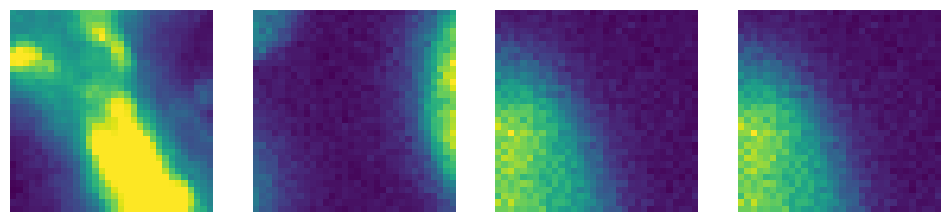
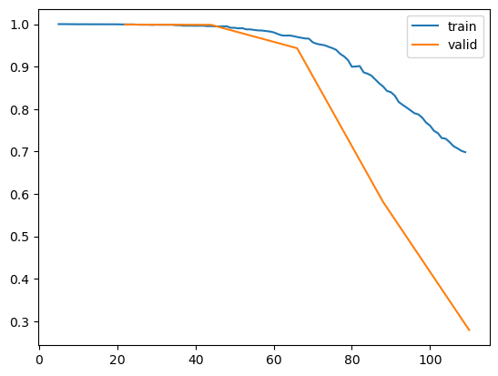
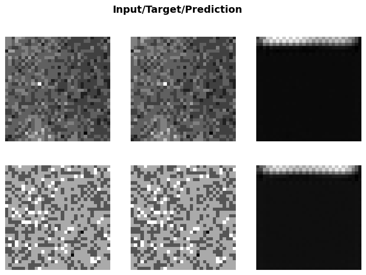

# file_path = 'data_examples/example_tiff.tiff's
# d, _ = tiff_reader(file_path)
file_path = '../../bioMONAI_0/_data/Thunder_20230308/nuevos_datos/dataset_2/targets/1.tif'
d, _ = tiff_reader(file_path)
file_path = '../../bioMONAI_0/_data/Babesia/TRITC/O11_TRITC_frame01.tiff'
e, _ = tiff_reader(file_path)Data
Data classes and functions
Utilities
Tiff reader
tiff_reader
tiff_reader (path, units='um')
Reads a TIFF file and returns the image data along with an identity affine matrix.
Parameters
path (str): The path to the TIFF file to be read. units (str, optional): The units for the image data. Default is ‘um’ (micrometers).
Returns
tuple: A tuple containing: - data (numpy.ndarray): The image data read from the TIFF file as a 4D array (1, Z, Y, X). - affine (numpy.ndarray): A 4x4 identity affine matrix.
| Type | Default | Details | |
|---|---|---|---|
| path | The path to the TIFF file to be read | ||
| units | str | um | The units for the image data. |
d.shape(1, 1, 2048, 2048)e.shape(1, 1, 512, 512)Lif reader
lif_reader
lif_reader (path, units='um', scene=0, time=0, reconstruct_mosaic=False)
Reads a LIF (Leica Image File) and returns the image data along with an identity affine matrix.
Parameters: path (str): The path to the LIF file to be read. units (str, optional). scene (int, optional): The scene index to be read from the LIF file. Default is 0. time (int, optional): The time index to be read from the LIF file. Default is 0. reconstruct_mosaic (bool, optional): Whether to reconstruct a mosaic image from the file. Default is False.
Returns: tuple: A tuple containing: - data (numpy.ndarray): The image data read from the LIF file in ZYX format. - affine (numpy.ndarray): A 4x4 identity affine matrix.
| Type | Default | Details | |
|---|---|---|---|
| path | The path to the LIF file to be read | ||
| units | str | um | The units for the image data. |
| scene | int | 0 | The scene index to be read from the LIF file |
| time | int | 0 | The time index to be read from the LIF file |
| reconstruct_mosaic | bool | False | Whether to reconstruct a mosaic image from the file |
# file_path_2 = 'data_examples/2022-12-05.lif'
# e, _ = lif_reader(file_path_2, units='um')CZI reader
czi_reader
czi_reader (path)
Reads a CZI (Zeiss CZI format) file and returns the image data along with an identity affine matrix.
Parameters: path (str): The path to the CZI file to be read.
Returns: tuple: A tuple containing: - data (numpy.ndarray): The image data read from the CZI file. - affine (numpy.ndarray): A 4x4 identity affine matrix.
| Details | |
|---|---|
| path | The path to the CZI file to be read |
# file_path_3 = 'data_examples/example_czi.czi'
# f, _ = czi_reader(file_path_3)Image Reader
# file_path = 'data_examples/example_tiff.tiff'
# f, _ = _image_reader(file_path)H5 Reader
h5_reader
h5_reader (path, dataset)
# f = h5_reader('data_examples/hdf5_data.h5','dataset1')Preprocessing
Load and preprocess
# load and process any file
# org_img, input_img, org_size = _load_and_preprocess(file_path)Read multichannel data
# file_names = get_image_files('data_examples')
# _multi_channel(file_names);Image reader
img_reader
img_reader (file_path:(<class'str'>,<class'pathlib.Path'>,<class'fastcore .foundation.L'>,<class'list'>), dtype=<class 'torch.Tensor'>, reorder:bool=False, resample:list=None, only_tensor:bool=True)
Loads and preprocesses a medical image.
Args: file_path: Path to the image. Can be a string, Path object or a list. dtype: Datatype for the return value. Defaults to torch.Tensor. reorder: Whether to reorder the data to be closest to canonical (RAS+) orientation. Defaults to False. resample: Whether to resample image to different voxel sizes and image dimensions. Defaults to None. only_tensor: To return only an image tensor. Defaults to True.
Returns: The preprocessed image. Returns only the image tensor if only_tensor is True, otherwise returns original image, preprocessed image, and original size.
| Type | Default | Details | |
|---|---|---|---|
| file_path | (<class ‘str’>, <class ‘pathlib.Path’>, <class ‘fastcore.foundation.L’>, <class ‘list’>) | Path to the image | |
| dtype | _TensorMeta | Tensor | Datatype for the return value. Defaults to torch.Tensor |
| reorder | bool | False | Whether to reorder to canonical orientation |
| resample | list | None | Whether to resample image to different voxel sizes and image dimensions |
| only_tensor | bool | True | To return only an image tensor |
#img_reader(file_path_2)Data types
Meta resolver
MetaResolver
MetaResolver (*args, **kwargs)
A class to bypass metaclass conflict: https://pytorch-geometric.readthedocs.io/en/latest/_modules/torch_geometric/data/batch.html
BioImageBase
BioImageBase
BioImageBase (*args, **kwargs)
A class that represents an image object. Metaclass casts x to this class if it is of type cls._bypass_type.
BioImage
class for 2D Images
BioImage
BioImage (*args, **kwargs)
Subclass of BioImageBase that represents 2D and 3D image objects.
a = BioImage.create('../../bioMONAI_0/_data/Babesia/RI/O11_RI_frame01.tiff')
print(a.shape)
a = BioImage.create('../../bioMONAI_0/_data/Babesia/TRITC/O11_TRITC_frame01.tiff')
print(a.shape)
a = BioImage.create('../../bioMONAI_0/_data/Thunder_20230308/nuevos_datos/dataset_2/inputs/1.tif')
print(a.shape)
a = BioImage.create('../../bioMONAI_0/_data/Thunder_20230308/nuevos_datos/dataset_2/targets/1.tif')
print(a.shape)torch.Size([1, 96, 512, 512])
torch.Size([1, 512, 512])
torch.Size([1, 56, 2048, 2048])
torch.Size([1, 2048, 2048])BioImageStack
class for 3D images
BioImageStack
BioImageStack (*args, **kwargs)
Subclass of BioImageBase that represents a 3D image object.
# a = BioImageStack.create('../../bioMONAI_0/_data/Babesia/RI/O11_RI_frame01.tiff')
# print(a.shape)
# a = BioImageStack.create('../../bioMONAI_0/_data/Babesia/TRITC/O11_TRITC_frame01.tiff')
# a.shapeBioImageProject
2D representations of 3D stack using maximum intensity projection
BioImageProject
BioImageProject (*args, **kwargs)
Subclass of BioImageBase that represents a 2D image object.
a = BioImageProject.create('../../bioMONAI_0/_data/Babesia/RI/O11_RI_frame01.tiff')
#a = BioImageProject.create('../../bioMONAI_0/_data/Thunder_20230308/nuevos_datos/dataset_2/inputs/1.tif')
a.shapetorch.Size([1, 512, 512])BioImageMulti
Multichannel datasets
BioImageMulti
BioImageMulti (*args, **kwargs)
Subclass of BioImageBase that represents a multi-channel 2D image object.
# a = BioImageMulti.create('../../bioMONAI_0/_data/Babesia/RI/O11_RI_frame01.tiff')#'../_data/Babesia/RI/O11_RI_frame01.tiff'
# print(a.shape)BioImage4D
4D datasets
# TO DO
class BioImage4D(BioImageBase):
"""Subclass of BioImageBase that represents a (multi-channel) 3D image object."""
@classmethod
def create(cls, fn: (Path, str, L, list, torch.Tensor), **kwargs) -> torch.Tensor:
"""
Opens an image and casts it to BioImageBase object.
If `fn` is a torch.Tensor, it's cast to BioImageBase object.
Args:
fn : (Path, str, torch.Tensor)
Image path or a 4D torch.Tensor.
kwargs : dict
Additional parameters for the medical image reader.
Returns:
torch.Tensor : A 3D tensor as a BioImage object.
"""
if isinstance(fn, torch.Tensor):
return cls(fn)
return torch.squeeze(img_reader(fn, dtype=cls, resample=cls.resample, reorder=cls.reorder), 1)
def __repr__(self) -> str:
"""Returns the string representation of the ImageBase instance."""
return f"BioImage4D{self.as_tensor().__repr__()[6:]}"# a = BioImage4D.create('../../bioMONAI_0/_data/Babesia/RI/O11_RI_frame01.tiff')#'../_data/Babesia/RI/O11_RI_frame01.tiff'
# print(a.shape)
tensor = torch.randn(3,10, 4, 5)
b = BioImage4D.create(tensor)#'../_data/Babesia/RI/O11_RI_frame01.tiff'
print(b.shape)torch.Size([3, 10, 4, 5])Data conversion
Tensor2BioImage
Tensor2BioImage (cls:__main__.BioImageBase=<class '__main__.BioImageStack'>)
A transform with a __repr__ that shows its attrs
Data blocks
ImageBlock
BioImageBlock
BioImageBlock (cls:__main__.BioImageBase=<class '__main__.BioImageStack'>)
A TransformBlock for images of cls
Display
Show batch
Show results
Example
from monai.transforms import ScaleIntensity
from bioMONAI.transforms import *spatial_dimensions = 2
roi_size = [32]*spatial_dimensions
item_tfms = [RandCropND(roi_size), ScaleIntensity]from bioMONAI.core import get_targetfile_folder = '../../bioMONAI_0/_data/Thunder_20230308/nuevos_datos/dataset_2'
dblock = DataBlock(blocks=(BioImageBlock(cls=BioImageProject), BioImageBlock(cls=BioImageProject)),
get_items=get_image_files,
get_y=get_target('../../bioMONAI_0/_data/Thunder_20230308/nuevos_datos/dataset_2/targets', same_filename=True),
splitter=RandomSplitter(valid_pct=0.2),
item_tfms=item_tfms,
)
# dblock.summary(file_folder)
dls = dblock.dataloaders(file_folder, bs=2)
dls.show_batch(max_n=2, cmap='viridis')Setting affine, but the applied meta contains an affine. This will be overwritten.
Setting affine, but the applied meta contains an affine. This will be overwritten.
from monai.networks.nets import DynUNet
from monai.losses import SSIMLossmodel = DynUNet(spatial_dims=spatial_dimensions, in_channels=1, out_channels=1, strides=(1, 2, 2),kernel_size=(3, 3, 3), upsample_kernel_size=(2, 2), res_block=True)loss_func = SSIMLoss(spatial_dims=spatial_dimensions)learn = Learner(dls, model, loss_func=loss_func)learn.summary()Setting affine, but the applied meta contains an affine. This will be overwritten.DynUNet (Input shape: 2 x 1 x 32 x 32)
============================================================================
Layer (type) Output Shape Param # Trainable
============================================================================
2 x 32 x 32 x 32
Conv2d 288 True
Conv2d 9216 True
LeakyReLU
InstanceNorm2d 64 True
InstanceNorm2d 64 True
Conv2d 32 True
InstanceNorm2d 64 True
____________________________________________________________________________
2 x 64 x 16 x 16
Conv2d 18432 True
Conv2d 36864 True
LeakyReLU
InstanceNorm2d 128 True
InstanceNorm2d 128 True
Conv2d 2048 True
InstanceNorm2d 128 True
____________________________________________________________________________
2 x 128 x 8 x 8
Conv2d 73728 True
Conv2d 147456 True
LeakyReLU
InstanceNorm2d 256 True
InstanceNorm2d 256 True
Conv2d 8192 True
InstanceNorm2d 256 True
____________________________________________________________________________
2 x 64 x 16 x 16
ConvTranspose2d 32768 True
Conv2d 73728 True
Conv2d 36864 True
LeakyReLU
InstanceNorm2d 128 True
InstanceNorm2d 128 True
____________________________________________________________________________
2 x 32 x 32 x 32
ConvTranspose2d 8192 True
Conv2d 18432 True
Conv2d 9216 True
LeakyReLU
InstanceNorm2d 64 True
InstanceNorm2d 64 True
____________________________________________________________________________
2 x 1 x 32 x 32
Conv2d 33 True
____________________________________________________________________________
2 x 32 x 32 x 32
Conv2d 288 True
Conv2d 9216 True
LeakyReLU
InstanceNorm2d 64 True
InstanceNorm2d 64 True
Conv2d 32 True
InstanceNorm2d 64 True
____________________________________________________________________________
2 x 64 x 16 x 16
Conv2d 18432 True
Conv2d 36864 True
LeakyReLU
InstanceNorm2d 128 True
InstanceNorm2d 128 True
Conv2d 2048 True
InstanceNorm2d 128 True
____________________________________________________________________________
2 x 128 x 8 x 8
Conv2d 73728 True
Conv2d 147456 True
LeakyReLU
InstanceNorm2d 256 True
InstanceNorm2d 256 True
Conv2d 8192 True
InstanceNorm2d 256 True
____________________________________________________________________________
2 x 64 x 16 x 16
ConvTranspose2d 32768 True
Conv2d 73728 True
Conv2d 36864 True
LeakyReLU
InstanceNorm2d 128 True
InstanceNorm2d 128 True
____________________________________________________________________________
2 x 32 x 32 x 32
ConvTranspose2d 8192 True
Conv2d 18432 True
Conv2d 9216 True
LeakyReLU
InstanceNorm2d 64 True
InstanceNorm2d 64 True
____________________________________________________________________________
Total params: 954,401
Total trainable params: 954,401
Total non-trainable params: 0
Optimizer used: <function Adam at 0x7f3f7ee847c0>
Loss function: SSIMLoss()
Callbacks:
- TrainEvalCallback
- CastToTensor
- Recorder
- ProgressCallbacklearn.fit_flat_cos(5,1e-3)| epoch | train_loss | valid_loss | time |
|---|---|---|---|
| 0 | 0.999406 | 0.999052 | 00:10 |
| 1 | 0.995351 | 0.998416 | 00:10 |
| 2 | 0.971927 | 0.943298 | 00:09 |
| 3 | 0.860400 | 0.580867 | 00:10 |
| 4 | 0.698286 | 0.279059 | 00:09 |
learn.recorder.plot_loss()
learn.show_results(cmap='gray')Setting affine, but the applied meta contains an affine. This will be overwritten.